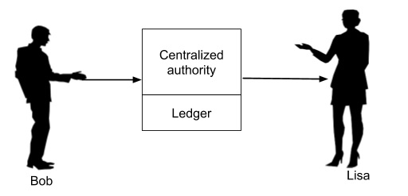
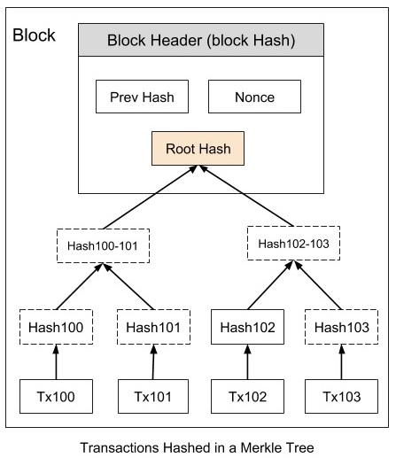

In recent years, there is a lot of buzz on Blockchain. Many have described this as a most disruptive technology of the decade. Especially, the financial markets could be the most affected ones.
The technology is being adapted into many verticals like Healthcare, Medicines, Insurance, Smart Properties, Automobiles, and even Governments.
However, so far the most successful implementation of Blockchain is the Bitcoin - A Peer-to-Peer Electronic Cash System, which incidentally is also the first implementation of blockchain technology. Thus, to understand blockchain technology, it is best to understand how Bitcoin System is designed and implemented.
In this article, you will learn what is Blockchain, its architecture, how it is implemented and its various features. I will site Bitcoin implementation while describing the intricacies of blockchain.
The blockchain architecture is not so trivial and many have written good articles, tutorials including several videos. These range audience from Novice to Professionals. In this tutorial, I will focus on the conceptual understanding of blockchain architecture, keeping both Novice and Professionals on mind. Before delving into the blockchain, it is important to know why the need for this new technology emerged? The answer to this question lies in what is known as Double − Spending.
Consider a situation shown in image −
As clearly seen here, Bob is tendering a $10 bill to Lisa in exchange of a book. Once the Lisa receives this physical $10 bill, there is no way for Bob to re-use this money for some other transaction, as the physical currency is now in Lisa’s possession.
Now, consider a situation where the money is paid in Digital form. This is illustrated in image −

As the format for money exchange is in the digital format, it is essentially a binary physical file stored somewhere on Bob’s device. After Bob gives this file (digital money) to Lisa, he can also a give a copy of the file to Alice. Both now think that they have received the money without having any means of authenticating the digital coin and would thus deliver their respective goods to Bob. This is called double-spending where the sender spends the same money at more than one place for obtaining services or goods from multiple vendors.
To solve this problem of double-spending, one would employ a centralized authority to monitor all the transactions. This is illustrated in image −
The centralized authority, which in common terms is your bank, maintains a ledger book recording all the transactions. Now, Bob has to send his digital money to the bank who would make an entry into its ledger debiting Bob’s account. After ensuring that Bob has sufficient balance to pay for the digital money which he wants to send, would send the money to Lisa crediting her account in its ledger.
Now, it is guaranteed that Bob cannot double spend the money. If every digital transaction is routed through a centralized authority like this, the problem of double-spending would be solved. This also provides another benefit in validating the authenticity of each coin (digital money) that it receives in the transaction. So the fake money (duplicate money as in the case of Bob paying to Alice using a copy) would be easily detected and prevented from the circulation.
The introduction of centralized authority though it solves the double-spending problem, introduces another major issue - the cost of creating and maintaining the centralized authority itself.
As the banks need money for their operations, they start cutting commissions on each currency transaction they do for their clients. This sometimes can become very expensive, especially in overseas transfer of money where multiple agents (banks) may be involved in the entire deal.
All the above issues are solved by the introduction of digital currency, called Bitcoin. I will now give you a brief background on what Bitcoin is before delving into its design and architecture.
The Bitcoin was introduced in this world by Satoshi Nakamoto through a research-style white paper entitled Bitcoin: A Peer-to-Peer Electronic Cash System in the year 2008.
The Bitcoin not only solved the double-spending problem, but also offered many more advantages, One such advantage worth mentioning here is the anonymity in the transactions. Satoshi who created the system and did transact few coins on this system is totally anonymous to the entire world.
Just imagine, in this world of social media, when the privacy of each individual is at stake, the world is not able to trace out so far who is Satoshi? In fact, we do not know whether Satoshi is an individual or a group of people. Googling it out also revealed the fact that the bitcoins Satoshi Nakamoto holds is worth about $19.4 billion - that money now remains unclaimed in the Bitcoin system. So what is Bitcoin - let us have a look!
What is Bitcoin?
As you saw earlier, the bank maintains a ledger recording each transaction. This ledger is privately held and maintained by the bank. Satoshi proposed that let this ledger be public and maintained by the community.
The moment you make such a ledger public, several considerations would come to your mind. This ledger has to be tamper-proof so that nobody can modify its entries. As each entry in the ledger is publicly visible, we will have to figure out how to maintain the anonymity - obviously you would not like everybody in the world to know that I paid you one million dollars.
Also, as there is only one single ledger keeping track of each and every transaction in the world, the size of ledger would be another great concern. Providing a solution to these intricacies was not trivial and that’s what I am attempting it here to make you understand underlying architecture of Bitcoin in simple words.
This underlying architecture is the Blockchain and that’s what this tutorial is about. To understand the Blockchain architecture, you need to understand a few key features on which it is based on. So, let us get started with PKI - Public Key Cryptography.
Public Key Cryptography or in short PKI is also known as asymmetric cryptography. It uses two pairs of keys - public and private. A key is a some long binary number. The public key is distributed worldwide and is truly public as its name suggests. The private key is to be strictly held private and one should never lose it.
In case of Bitcoin, if you ever lose the private key to your Bitcoin wallet, the entire contents of your wallets would be instantly vulnerable to theft and before you know it, all your money (the contents of your wallet) would be gone with no mechanism in the system to trace out who stole it - that is the anonymity in the system that I mentioned earlier.
The PKI accomplies two functions - authentication and the message privacy through encryption/decryption mechanism. I will now explain both these functions −
Authentication
When the two parties exchange messages, it is important to establish a trust between the sender and the receiver. Especially, the receiver must trust the source of message. Going to our earlier scenario (depicted in Figure 1) of Bob sending some money to Lisa for purchasing of some goods from her, let us see how the PKI builds this trust between Bob and Lisa. Look at below image −

In the first place, if Bob wants to send some money to Lisa, he has to create a private/public key of its own. Note that both keys are always paired together and you can not mix the private and public keys of different individuals or different instances
Now, Bob says that he is sending $10 to Lisa. So he creates a message (a plain-text message) containing Bob’s (sender) public key, Lisa’s (receiver) public key, and the amount ($10).
The purpose of this remittance such as “I want to buy pumpkin from you” is also added into the message. The entire message is now signed using Bob’s private key. When Lisa receives this message, she will use the signature verification algorithm of PKI and Bob’s public key to ensure that the message indeed originated from Bob. How the PKI works is beyond the scope of this tutorial. The interested reader is referred to this site for a more detailed discussion on PKI. This establishes the authenticity of the message originator. Now, let us look at the message privacy.
Message Privacy
Now, as Lisa has received her payment, she wants to send the link to her ebook which Bob wants to buy. So Lisa would create a message and send it to Bob as shown in image −

The Lisa creates a message such as “Here is the link to my ebook which you had requested”, signs it with Bob’s public key that she has received in Bob’s request message and also encrypts the message using some secret key which is shared between the two during HTTPS handshake.
Now, Lisa is sure that only Bob can decode the message using the private key that is held by Bob alone. Also, somebody intercepting the message would not be able to recover its contents because the contents are encrypted by a secret key held only by Bob and Alice. This guarantees to Lisa that access to her ebook is granted only to Bob.
Having seen both the features, Authentication and Message Privacy, implied by PKI, let us move ahead to see how Bitcoin makes use of PKI to secure the public ledger that I mentioned in the chapter “What is Bitcoin?”
One of the most important function in PKI is the hashing function. A hash function maps the data of any arbitrary size to data of fixed size. Bitcoin uses SHA-256 hash function that produces a hash (output) of size 256 bits (32 bytes). This is illustrated in image −

Bob, while placing an order with Lisa, creates a message similar to the one shown above. This message is hashed through a hash function that produces a 32 byte hash. The beauty of this hash is for all practical purposes the hash (the 256-bit number) is considered unique for the contents of the message. If the message is modified, the hash value will change. Not only that given a hash value, it is impossible to reconstruct the original message.
After having seen the importance of hashing, let us move on another concept in Bitcoin that is mining.
When Bob creates a purchase request for Lisa, he does not send it to Lisa alone. Rather the request message is broadcasted on the entire network to which he is connected. Bob’s network is depicted in image.
The message goes to all the connected nodes (machines). Some of the nodes in the diagram are marked as miners. These are the machines which run a piece of software for mining the bitcoin message. I will now explain you what this mining means.
Mining Process
As the entire network is widely distributed, every miner in the network is expected to receive multiple messages from multiple vendors at any given period of time. What the miner does is he combines these messages in a single block. This is illustrated in image −

After a block of messages is formed, the miner creates a hash on the block using the hashing function described earlier. Now, as you know if any third party modifies the contents of this block, its hash would become invalid. Incidentally, each message is time-stamped so that nobody can modify its chronological order without affecting the block’s hash value. Thus, the messages in the block are perfectly secured from tampering. How this fact is used in securing all the transactions in the network is explained further.
The blocks created by various miners are chained together to form what is known as a truly distributed public ledger.

Each block in the chain contains multiple messages (transactions) as seen earlier in Figure 8. A block in the chain may come from any miner. While creating the chain of blocks, we observe the rule that hash of the previous block is added to the current block.
Thus, a miner while creating the block, picks up the hash of the last block in the chain, combines it with its own set of messages and creates a hash for its newly created block. This newly created block now becomes the new end for the chain and thus the chain keeps on growing as more and more blocks are added to it by the miners.
As all transactions are time stamped, we need to implement a distributed timestamp server on a peer-to-peer network. This requires some additional implementation and that is the Proof-of-Work that I will describe now. To each block, we now add one more item called Nonce as shown in the figure below −

Nonce is a number such that the block’s hash meets a certain criterion. This criterion could be that the generated hash must have its leading four digits to be zero.
Thus, the generated hash would look like 000010101010xxx. Generally, the miner starts with a Nonce value of 0 and keeps on incrementing it until the generated hash meets the specified criterion.
Note that the hash generation works at random and is beyond your control - that is you cannot force the hash function to generate a certain hash. Thus, it may take several iterations until the desired hash with four leading zeros is generated. The expected time for generating a block in bitcoin system is 10 minutes. Once the miner successfully mines the block, he releases that in the system making it now the last block in the chain.
Note that there are multiple miners competing to generate the legitimate block. The Bitcoin system awards the first successful miner by giving him certain bitcoins. In general, the miner with more computing power may be an early winner. This can cause attacks on the entire system by those who possess a huge processing power. I will describe the attacks and how these are mitigated towards the end of this tutorial.
I will now summarize the steps described above; this is what happens in the network −
- Anybody who wants to obtain services from the third party who has advertised on the network first creates a transaction (message to the desired recipient).
- Over a given period of time, there could be many senders (buyers) and receivers (sellers) creating such transactions.
- All transactions are broadcast on the network to all nodes. Note that it is not necessary that a given transaction must reach each and every other node in the network.
- Each node assembles the new transactions into a block. Note that the set of transactions in each block is independent of the set in blocks created by others and will naturally be different than others. This does not matter; the system ensures that every transaction broadcast on the network gets included in some block over a reasonable amount of time. Generally, the sender will incentivize the node by offering a certain amount of bitcoins to the miner for its efforts. The miner may opt for giving priority for inclusion in the block to those with higher incentives.
- The node now works on finding the proof-of-work for its assembled block.
- When the node finds a proof-of-work, it broadcasts the assembled block on the network.
- The nodes that receive the new block will accept it only after verifying that all transactions in the block are valid and not already spent.
- If the block is accepted as valid, the node which is working on its own new block will have to re-assemble the transactions in its block ensuring that the transactions are not duplicated. The node now works on finding the proof-of-work on its newly created block; while doing so it will take the hash of the accepted block as the previous hash
- Likewise, the blockchain continues growing for ever.
Now, as we have seen how the entire system works, let me describe some of the side effects and how to resolve them.
As we saw in the chapter Bitcoin - Mining, a miner may be flooded with many transactions at any given period of time. The maximum size for a block is pre-defined in the system necessitating that only a certain number of transactions be included in the block.
The number of transactions in the block is determined by the pre-defined block size and the average length of each block. An important tip here is that the sender should not include too much information in its message so as to make it short and thereby incentivizing the miner to accept it before the other lengthy messages.
A sender generally will also add a transaction fee in terms of a certain number of bitcoins so as to incentivize the miner for early inclusion in his block.
The other consequence in building the blockchain is its mere size. Over a period of time, the entire blockchain may become too large for a node to store it on its disk. This is solved by using Merkle Tree which is described next.
The issue of disk space in a node is easily overcome because all transactions in a block are hashed in a Merkle Tree as shown in image −
The block header now contains the hash of the previous block, a Nonce, and the Root Hash of all the transactions in the current block in a Merkle Tree. As this Root Hash includes the hashes of all the transactions within the block, these transactions may be pruned to save the disk space. So now your blockchain will look like in below image −

This can result in a lots of saving in the disk space. This strategy is used by a normal client who is interested in just receiving payments from others. However, the miners need to save the full blockchain. Now the question arises, how a receiver verifies the payment without having the ability to trace a received coin right to its origin. This is explained next.
Consider a case whereby as a vendor you may like to verify a certain payment made in the past. As the blockchain you are holding on your machine contains only the block headers as shown in the earlier figure, the transaction that you are searching for is missing in the copy of your blockchain.
You can now search backwards in your copy of the blockchain until you find a block in which the desired transaction is timestamped in. Now, request the merkle tree of the selected block and you will have the transaction that you are looking for. This is illustrated in below Figure −

Here, we assume that you are looking for Tx103. Though you may not be able to see the contents of Tx103, you know that this has been accepted by the block to which it belongs and all subsequent blocks in the chain. Thus, you can safely trust this transaction and proceed with your business.
As we have seen the Bitcoin network contains several miners. It is possible, that the two different miners solve the Proof-of-Work at the same time and thus add their blocks to the last known block in the chain. This is illustrated in below image −

Now, we have two branches after Block 3. Both the branches are valid. So the next mined block may be added in either of the branches. Suppose, the miner adds the newly mined block to Block 104-A, the branch containing Block 104-A will be longer than the branch containing Block 104-B. This is illustrated in below image −
In Bitcoin architecture, the longest branch always wins and the shorter ones are purged. So the Block 104-B has to be purged. Before purging this block, all transactions in this block will be returned to the transaction pool so that they are mined and added to some future block. This is how the conflicts are resolved and only one single chain of blocks is maintained by the system.
As the ledger which is recording all the bitcoin transactions is made truly public, the privacy is at stake. Anybody in the world would be able to know who paid whom? The traditional banking system is able to maintain this kind of privacy by keeping its records confidential.
Privacy in Bitcoin system is achieved by a different strategy. Note that we said that the sender of a bitcoin needs to know whom to pay. So he asks for the public key of the vendor to which he desires to make the payment. This public key can be anonymous.
In the sense, as a vendor of some services, when somebody asks you where to send the payment, you would simply send him your public key. The association of this public key with you is not recorded anywhere in the ledger. That way anybody outside of this transaction would only know how much money is transacted and to which public key the money is paid out.
To achieve a higher degree of privacy, for every transaction, you may generate a new private/public key for each transaction so that multiple transactions made by you cannot be grouped together by a third party. For an outsider, this would simply mean that multiple transactions of smaller values were made and they will never will be linked to a common source.
Lastly, any online internet based system is vulnerable to abuses. I will now describe few possible types of attacks on Bitcoin system and how those are mitigated.
I will discuss three different types of probable attacks in the Bitcoin system −
Race Attact
As an attacker, you may send the same coin to different vendors in rapid succession, probably by using two different machines. If the vendors do not wait for the block confirmation before delivering the goods, they will very soon realize that the transaction was rejected during the mining process. The solution to this kind of attack is that the vendor must wait for at least one block confirmation before sending out the goods.
Finney Attack
In this case, the attacker is the miner. The miner mines a block with his transaction and does not release it in the system. He now uses the same coins in a second transaction and then releases the pre-mined block. Obviously, the second transaction would be rejected eventually by other miners, but this will take some time. To mitigate this risk, the seller should wait for at least six block confirmations before releasing the goods.
The 51% Attack
In this kind of attack, we come up with an impractical assumption that somebody owns 51% of the computing power of the network. The attacker in this kind of attack mines a private blockchain where he double-spends the coins.
As he owns the majority of computing power, he is guaranteed that his private blockchain at some point of time would be longer than the chain of “honest” network. He then releases his private blockchain in the system making all the transactions earlier recorded in the honest blockchain to be invalid
This kind of attack is fictitious as it is very expensive to acquire computing power which equals or exceeds 51% of the computing power of the entire network.
In this short tutorial you were introduced to several concepts of Blockchain by taking Bitcoin as a case study. The Bitcoin is the first successful implementation of blockchain. Today, the world has found applications of blockchain technology in several industries, where the trust without the involvement of a centralized authority is desired. So welcome to the world of Blockchain.
All the documentation in this page is taken from tutorialspoint.